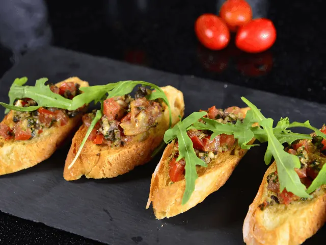
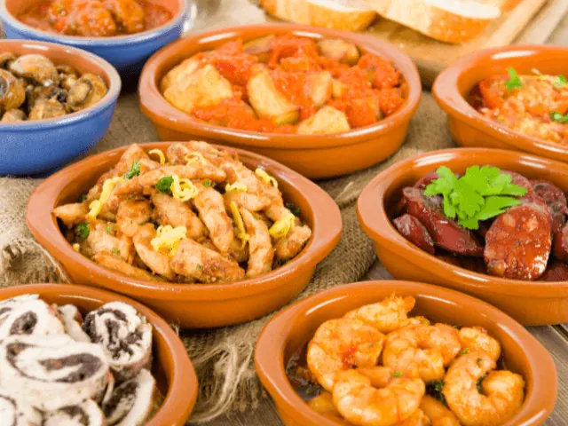

Tapas eten in Nijmegen, hier kan je dat doen!
Gepubliceerd op 28 december 2022, bijgewerkt op 20 oktober 2023
Onderdeel van de gids Restaurants in Nijmegen

Wanneer je uit eten wilt gaan en iedereen blij wilt maken kom je al snel uit bij een ‘all you can eat’ restaurant of een tapas restaurant. Hier is namelijk voor ieder wat wils te vinden. Bij een tapas restaurant kan je kiezen uit de vele kleine gerechten die er op de kaart staan. Dit kan vlees, vis, diverse groentes of kaas zijn. Elk tapas restaurant heeft zijn eigen gerechten en specialisaties. Wil je weten welke tapas restaurants er in en rond Nijmegen zijn, dan zou ik aanraden om snel verder te lezen.
Overzicht Tapas restaurants in Nijmegen
Wat is tapas?
Tapas zijn kleine hapjes of gerechten die traditioneel worden geserveerd in Spanje als aperitief of als onderdeel van een maaltijd. Ze kunnen bestaan uit een verscheidenheid aan gerechten, zoals kaas, worst, olijven, gegrilde groenten, vis en andere kleine hapjes. Tapas zijn vaak gekoppeld aan het concept van sociale eten of shared dinner, waarbij mensen samenkomen om te genieten van een aantal kleine gerechten in plaats van één grote maaltijd. Ze zijn populair om te delen met vrienden en familie en worden vaak geserveerd met drankjes, zoals wijn of bier. Tapas eten is een leuke manier om te genieten van de verschillende smaken en gerechten en om te socializen.

Hoe is Tapas ontstaan?
Er zijn verschillende verhalen over de oorsprong van tapas, en het is moeilijk om precies te bepalen hoe ze het ontstaan is. Een populaire theorie is dat tapas oorspronkelijk bedoeld waren om drankjes af te dekken om te voorkomen dat stof of insecten erin zouden vallen. Volgens deze theorie werden kleine hapjes of gerechten op de dranken gelegd om ze af te dekken, en zo ontstonden de eerste tapas.
Een andere theorie is dat tapas oorspronkelijk werden geserveerd als tussenmaaltijden voor mensen die lang op straat werkten. De tapas zouden een manier zijn geweest om de honger te stillen tijdens het werk zonder te veel tijd te hoeven nemen om te eten.
Tegenwoordig worden tapas geserveerd als aperitief of als onderdeel van een maaltijd en zijn ze populair om te delen met vrienden en familie.

Kan je tapas eten als vegetariër?
Ja, er zijn veel vegetarische opties beschikbaar als je tapas wilt eten. Er zijn veel vegetarische tapasgerechten, zoals gegrilde groenten, gegrilde aubergine met geroosterde paprika, aardappelomelette, gegrilde portobello-paddenstoelen met truffelmayonaise, gegrilde courgette met feta en munt, en gegrilde paprika met geitenkaas. Je kunt ook vegetarische opties vinden zoals quiche, gevulde paprika en geitenkaas- of spinaziequiches. Bovendien zijn er vaak ook veel vegetarische dips en hapjes beschikbaar, zoals hummus, guacamole en tzatziki. Dus er zijn genoeg vegetarische opties om uit te kiezen als je tapas wilt eten.
Waar kan ik Tapas eten in Nijmegen?
- ’t Zusje
- Don Pablo
- Osteria Pomodoro
- Casa Valencia
- La Bella Excuse
- La Cubanita Nijmegen
- Mi Barrio
- Fingerz
- Restaurant Nibbles
Tapas eten regio Nijmegen
- Restaurant Dinges (Beuningen)
- Het Broertje (Wijchen)
- Bistro Eten en Drinken (Groesbeek)